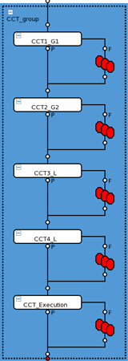
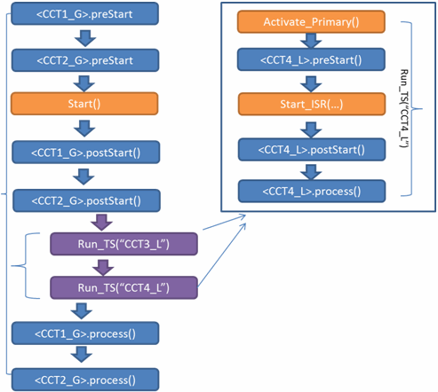

CCF-ISR mode
This mode is based on the feature of Independent Sequencer Run (ISR) on SmartScale cards.
Independent sequencer running (ISR) allows starting several sequencers serially on a group of ports (Independent ports) while another sequencer is running on another group of ports (synchronuous ports). This can help to improve the concurrent test efficiency when the fully pattern-synchronized tests cannot be achieved, for example, the interactive tests in which the measurement condition depends on the previous measurement. You can run the synchronized test suites concurrently with a multiport burst pattern while running other independent test suites serially. Ideally,the independent test suites will be hidden behind the synchronized test suites.
Currently, only one group of independent ports supported in a CCF block. The patterns used in the independent test suites must be for the same ports.
Synchronized test suites: The patterns used with these test suites are handled the same way as in CCF-Burst Mode. A multiport burst pattern is run and the sequencer of each port is synchronized.
Independent test suites: The pattern of each test suite can be started serially or in parallel, while the multiport burst pattern of the synchronized test suites is running. The running of these patterns is asynchronous to the running of the multiport burst pattern. In the following figure, the independent test suites CCT3_L and CCT4_L are executed in series. They can alternatively be specified to execute in parallel. This choice is controlled using the CCF_ParallelISR test method parameter options:
- SERIAL _ISR - Independent test suites in the associated CTF block run serially while the synchronized test suite is running.
- PARALLEL_ISR - Independent test suites in the associated CTF block run in parallel while the synchronized test suite is running.
The following figure shows the process of a CCF block in the CCF-ISR Mode.


An independent test suite can have different digital primaries (timing and level) and analog primaries (predefined in the analog file or created with createAnalogSet() or createRFSet()) from any other independent test suite or synchronized test suites. The CCF will apply the digital primaries only to the pins in the assigned focused ports. Due to the system limitation, the changes of the primaries must not impact the digital master clock. Otherwise, the running sequencer may be stopped.
You can make the following hardware setup before starting a pattern on the independent ports in
the preStart() funciton.
Description |
Comments |
|---|---|
Change multiport timing spec and timing set |
These primary changes only apply to the pins of the independent ports. |
Change timing spec variable |
|
Change level spec and level set |
|
Change level spec variable |
|
Change static condition parameters of primary analog set |
The hardware update only applies to the idle boards or units. |
Create and change an analog set |
|
Change utility line state |
|
After an independent sequencer is finished, you can retrieve the result for the measurement in the process() function.
Description |
Comments |
|---|---|
Retrieve pass/fail result for the previous executed pattern of the independent port |
GET_FUNCTIONAL_RESULT() |
Upload waveform from digitizer |
GET_WAVEFORM() GET_COMPLEX_WAVEFORM() |
Upload captured samples after the digital capture |
VECTOR() |
Use smartCalc to do the three actions above |
|
Functional changes
- Introduced in SmarTest 7.2.0
- SmarTest 7.3.2: CCF_ParallelISR parameter introduced to enable parallel testing of independent test suites.